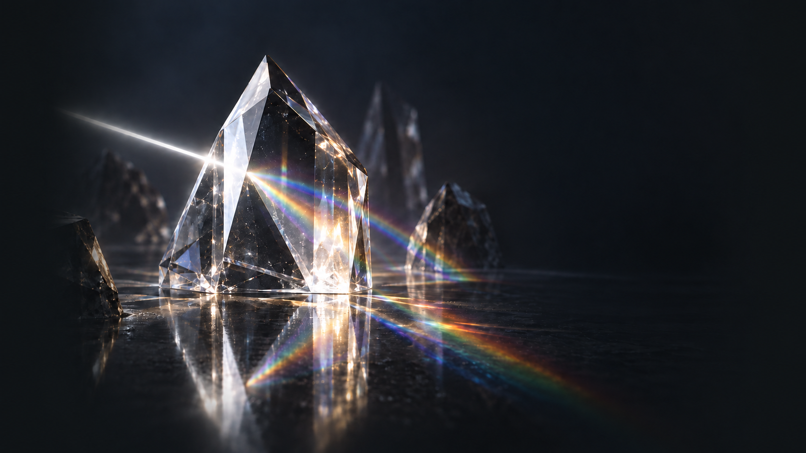

Rendering improvements
OIT transparency, SSS, PCSS, GTAO, TAA, water rendering, volumetric lighting, automatic bloom, better eye adaptation, post sharpening.
A customized third-party viewer for Second Life, built from the open-source Linden Lab viewer.
Release 0.6.2 · Windows · Active development

Prism brings a refreshed interface, built-in avatar tools, and expanded chat, inventory, and rendering features to everyday Second Life use.
OIT transparency, SSS, PCSS, GTAO, TAA, water rendering, volumetric lighting, automatic bloom, better eye adaptation, post sharpening.
Freeze world, select focus, camera controls, post color grading (contrast, tint, shadows/midtones/highlights, etc), and photography related overlays
Emerald accents, a crystal-themed login screen, frosted-glass panels, and redesigned chat and messaging windows.
Inventory-backed animation sets with import and export support for Firestorm folders.
Nearby-avatar radar, friend and VIP highlighting, attachment inspection, and posing tools.
Boolean search, easier outfit editing (click + drag items to outfits, delete singular items from outfits supported).
Prism is intended to be used with modern hardware. It adds a lot of rendering features that will put extra load on your GPU. You'll want to have a fairly modern video card, and a relatively modern CPU for AVX2 optimizations.
Project images and screenshots will go here.
Scroll to browse · click an image to expand
See the latest Windows build and release notes on GitHub.